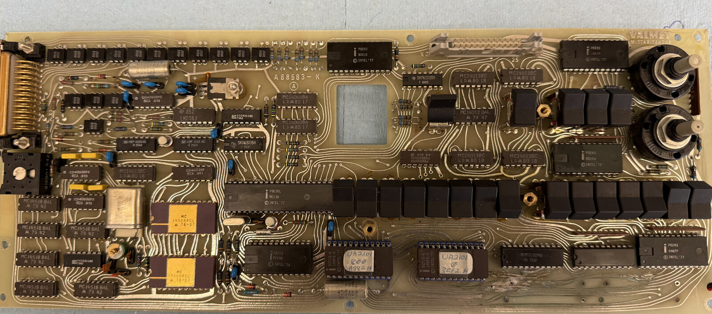

Toggle categories on/off to isolate what you're tracing. Base photo:
pic/bottom_pcb_component_side.jpg (pixel-aligned to this
overlay — do not swap in a re-cropped version without regenerating the
marker coordinates below). Naming convention: <part>-<board><n>,
board B = bottom/CPU board, T = top/front-panel board.

Open questions still tracked in db25_replacement.md: P8243-B1's
identity needs re-confirming at the board, and two more P8243 packages
(near the relay bank and the top-right pots) aren't assigned an index yet.